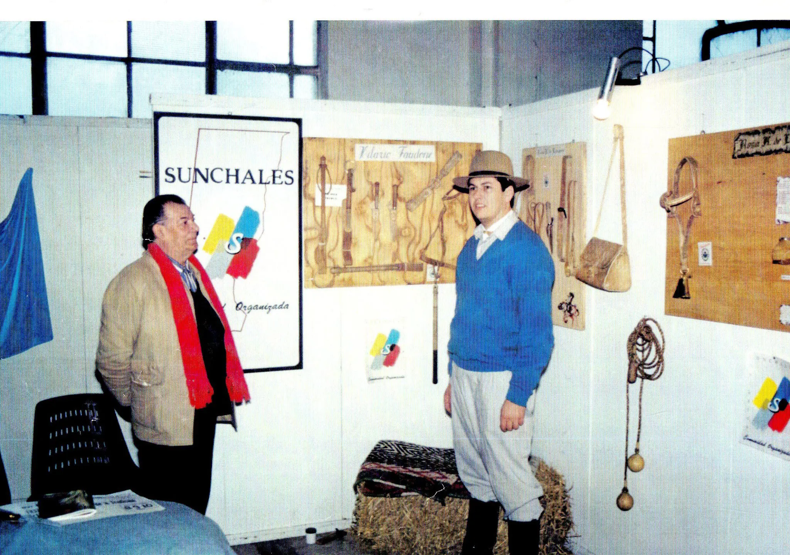

Los Inicios en Sunchales
La historia de mi profesión comienza en Sunchales, cuando inicio un curso con mi maestro Hilario Faudone en el liceo municipal de Sunchales en Santa Fe. Esta profesión comenzó como un hobbie pero poco a poco se convirtió en mi forma de vida.
Mi maestro me enseñó mucho de lo que sé y todavía conservo cada una de sus lecciones, pero también a medida que pasaban los años fui conociendo a otros artesanos con quienes fui aprendiendo.

El Camino del Artesano
Las primeras ferias de artesanías donde me presenté fue representando a la provincia de Santa Fe, en ellas empecé mostrando mis primeras piezas.
Años más tarde me mudo a Córdoba; aquí trabajé primero en otros rubros pero seguía haciendo esta actividad de forma secundaria. Tras decidir dedicarme solo a este noble arte, comencé a participar activamente en la Feria de Artesanías de Córdoba.
.webp)
Reconocimiento y Enseñanza
Cada una de estas participaciones me trajo reconocimientos, permitiéndome participar en la Feria de Palermo donde fui reconocido en varias oportunidades.
Con el paso de los años empecé a notar que cada vez éramos menos los artesanos dedicados a este arte y decidí empezar a dar clases. Así es como ahora divido mis días entre la producción y la enseñanza, transmitiendo el conocimiento a clientes que hoy son amigos.